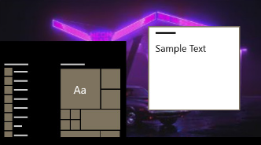

Settings
Home
Personalization
Background
Colors
Lock screen
Themes
Fonts
Start
Taskbar
Colors
Related Settings
High contrast settings
Sync your settings
Help from the web
Changing desktop or background colors
Changing taskbar color
Get help
Give feedback

Choose your color
Custom
Choose your default Windows mode
Light
Dark
Choose your default app mode
Light
Dark